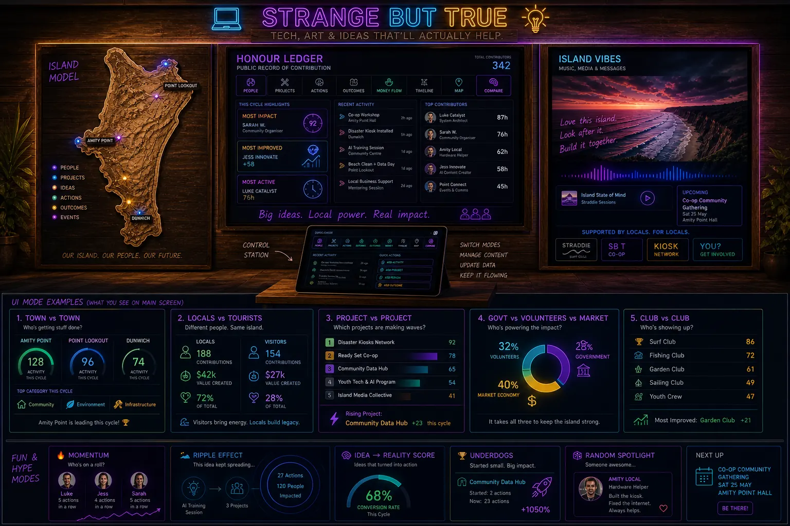

Future automated receipt lane
C-Hour Receipt Pipeline
C-Hours should not be hand-entered through a web form. They should be generated by authorised agents from accepted data pipelines, then held for human checkpoints before any ledger summary exists.
Not a manual builder
No C-Hour form yet.
A C-Hour receipt is too important to reduce to a person typing hours into a form. The safer target is an agent-generated draft built from approved evidence streams, with human-in-the-loop review before any public or permissioned tally.
The future output may still be a local c-hour-receipt.md file, but the file should be produced from a controlled pipeline: source event, accepted authority, agent draft, human checkpoint, correction path and only then a ledger summary. The local-government submission frames this as civic instrumentation for councils: one verified hour of contribution made visible without turning it into charity, ordinary money or a speculative token.
Required pipeline
Future receipt fields
source_event
accepted_authority
agent_draft_id
human_checkpoint
visibility
correction_path
ledger_summary_status
This remains a proposed design pattern. It is not money, not a token, not legal advice, not financial advice and not an adopted P4A policy.